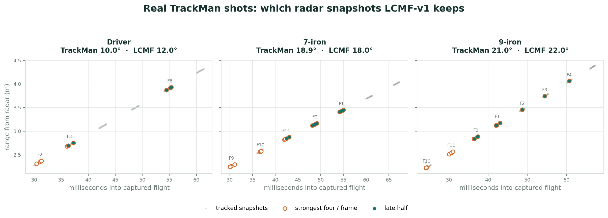
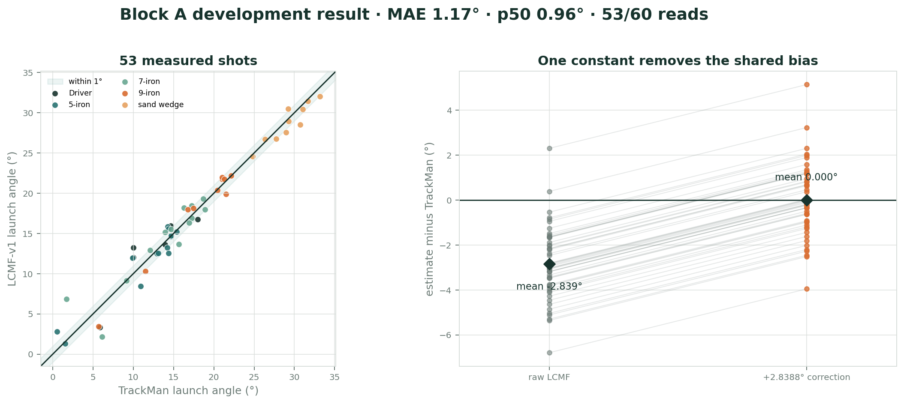

OPS243
Measures ball and club radial speed from its rolling buffer. This remains the speed authority.
OpenFlight · Field report · Updated July 17, 2026
A plain-language guide to the OPS243 + TI IWR6843 pipeline, the late-flight algorithm we call LCMF-v1, what the first TrackMan session taught us, and what still needs independent validation.
Explain it like I’m five
The OPS radar tells us how fast the ball is moving. The TI radar takes a short movie made of radio echoes. We find the little streak that moves away from the tee, keep the clearest moments from each frame, and pay extra attention to the later part of the flight because the ball is farther from the club, golfer, and impact mess.
Five slightly different physics models each estimate launch angle. We average their answers, then add one fixed ruler correction of 2.8388° that was measured against TrackMan. If the radar movie is too weak to follow the ball, we do not guess a radar angle; the UI labels a normal club-based estimate instead.
The important idea: many looks + multiple models + one honest global correction, never a custom offset for each club.
Where we are
This is promising development evidence, not the final accuracy claim. The model family and correction were selected using the July 14 session. The next TrackMan session is the first truly independent test of the frozen pipeline.
Architecture
The one-chip goal was useful while learning the TI sensor, but it is no longer the product direction. OPS speed has been highly consistent and does not need to be replaced. The TI board is now focused on the measurements its antenna array can add: vertical launch angle today, and eventually aim direction and club path.
Measures ball and club radial speed from its rolling buffer. This remains the speed authority.
Stores a 72 ms coherent radar movie across eight virtual vertical antenna channels.
Combines OPS speed with TI launch angle. If TI has no read, the shot still appears with an estimated angle.
The K-LD7 could usually see only one or two useful frames before the indoor net stopped the ball. It also had coarse range resolution and only a two-element angle view, so a clean ball echo and a floor reflection could blend into one believable but wrong angle.
The IWR6843 uses 3.2 GHz of sweep bandwidth for roughly 4.7 cm range bins and combines two transmitters with four receivers into eight virtual vertical channels. Variant B stores 12 frames, each with 16 chirp pairs, at 6 ms spacing. That gives us enough time history and antenna diversity to model the reflection instead of pretending it is not there.
The rolling buffer is the enabling trick. The chip continuously overwrites its 768 KB radar cube. Impact freezes the last 72 ms, then the Pi drains the 786,452-byte dump over UART in about 7.6 seconds. We accept the delay because we keep the raw evidence for every shot.
LCMF-v1
LCMF means Late-Flight Complex Multipath Fusion. “Late-flight” means it favors the cleaner second half of the captured ball flight. “Complex” means it keeps both amplitude and phase from every antenna. “Multipath” means direct and floor-reflected echoes are modeled together. “Fusion” means no single model gets to decide the answer.
The same impact edge timestamps the OPS shot and starts the TI dump. Matching is normally within a few milliseconds.
Static clutter is removed. The tracker follows a target moving outward through range over time rather than trusting aliased Doppler speed.
Keep snapshots with strength score ≥ 8 and range ≤ 4.7 m, then retain at most the strongest four from each frame. One noisy frame cannot dominate.
The independently measured OPS ball speed defines the candidate trajectory. TI’s local range-walk velocity handles the small timing correction between transmitters.
Two models compare the eight antenna channels across all balanced snapshots. Three inspect the direct and reflected range structure in the chronological late half.
Each model receives exactly 20% weight. Their mean is the raw LCMF angle; the frozen device-wide correction is added once.
| Model family | Plain-language question | Data used |
|---|---|---|
| Two channel models | Which launch trajectory best explains the phase pattern across the antenna array when direct and floor paths are allowed? | All balanced snapshots |
| Three fast-time models | Which trajectory best explains the small range separation and mixture of direct and reflected echoes around the tracked ball? | Chronological second half |
| Equal fusion | What answer survives five different assumptions instead of winning one hand-picked model? | 20% per component |
Real captured shots
The gray marks below are usable snapshots along three real TrackMan-paired ball tracks. Orange circles are the strongest four retained from each frame. Teal dots are the chronological late half used by the three fast-time models. Frame numbers wrap because the radar memory is a ring; the horizontal time axis is the true order.

This selection is deliberately boring: no club-specific timing window, no TrackMan input, and no hand-picked frame number. The same strength, range, per-frame balancing, and chronological-half rules run on every shot.
Calibration
After the five model outputs were averaged, the raw LCMF estimate was consistently low. Across the 53 Block A shots with enough radar coverage, the mean signed difference was:
So the calibration is the equal and opposite number:
This is a single device-and-model correction. We explicitly rejected per-club offsets because they can quietly learn one golfer’s delivery and create an impressive score that will not travel to another player.
TrackMan development session

| Metric | Result | How to read it |
|---|---|---|
| Coverage | 53 of 60 · 88.3% | Seven shots lacked enough strict radar coverage and correctly returned no measurement. |
| MAE | 1.17° | The average absolute distance between LCMF and TrackMan across the 53 measured shots. |
| Cross-fit MAE | 1.19° | A more conservative test where the correction is learned on the opposite half. |
| p50 absolute error | 0.96° | Half of measured shots were within 0.96°; this is not “the best half.” |
| p75 absolute error | 1.62° | Three quarters were within 1.62°. |
| p95 absolute error | 2.80° | Nineteen of twenty measured shots were within about 2.8°. |
What changed from the previous report: the old 2.6° result depended on the retired point-angle/two-ray pipeline and per-club holdout offsets. LCMF-v1 is a different estimator with one global correction and 53/60 Block A coverage. The old numbers should not be mixed with the new ones.
Why it is working
Product behavior
| Pipeline outcome | Displayed launch angle | UI source |
|---|---|---|
| LCMF-v1 produces an angle | The measured TI angle | radar |
| TI has insufficient coverage or a rejected track | Club/speed fallback | estimated |
| TI capture fails or misses correlation | Club/speed fallback | estimated |
| OPS does not create a shot | No shot record | — |
There is no angle-value or confidence gate after LCMF produces a result. Even an accepted_track_quality_warning angle reaches the UI. The seven Block A no-reads would therefore appear as seven estimated angles, not seven missing UI rows, as long as OPS detected each shot.
Confidence is intentionally conservative. LCMF-v1 does not yet have a truth-calibrated probability score, so measured TI angles should not inherit the fallback estimator’s 20–50% confidence. Session logs retain the five component angles, component spread, snapshot count, frame count, tracker evidence, and exact no-read reason for later scoring.
Current truths
Limits and next experiment
Firmware roadmap
The current Variant B firmware is a strong vertical-launch baseline, but it is not the final use of the chip. Every upgrade spends from the same fixed on-chip memory budget: more transmitters, more chirps, more range samples, and more frames all compete for space and time. The goal is therefore not “collect everything.” It is preserve the useful complex antenna data while wasting fewer bytes on empty range and unhelpful moments.
Antenna-name clarification: today we use TI-labeled TX1 + TX3 to form the eight-element vertical array. The physically third, currently unused transmitter is TX2; its offset position supplies the second axis needed for horizontal launch direction, or aim.
A fast driver can reach a close net roughly 40 ms after impact, leaving only a few late-flight frames at the current 6 ms spacing. The strongest next capture experiment is 24 fine-range frames at roughly 4–5 ms spacing, made possible by reducing the vertical burst from 16 to 8 loops.
This doubles the number of looks without coarsening the current 4.7 cm range bins. It also gives up about half the snapshots per frame, so it must be A/B tested against Variant B. The earlier D2 test already warned us that more weak or coarse frames are not automatically better.
The raw dump stores every range sample even though the ball occupies a narrow corridor. A firmware range FFT followed by conservative range gating or compression could retain fine-resolution complex values near the golfer and ball while discarding empty bins.
That memory can buy deeper vertical bursts, denser frames, or a longer post-impact window, while a smaller payload reduces the current 7.6-second blind period. The Pi should still perform tracking and LCMF so raw-enough evidence remains inspectable.
Simply firing all three transmitters on every loop would increase each frame's chirp data by 50%, reduce the number of frames that fit, and complicate fast-ball timing. That is the wrong first trade for a vertical estimator that benefits from dense late flight.
The preferred design is a high-rate TX1 + TX3 vertical stream with occasional TX2 aim looks, either as a small interleaved group or a lower-rate subframe. Aim changes slowly enough that it should not consume the same cadence as vertical launch. TX2 will need its own channel calibration and TrackMan- or camera-paired horizontal validation.
The present host delay lets a continuously rolling ring fill with post-impact flight before it freezes. A stronger firmware contract would record the impact reference and deliberately allocate a small pre-impact block plus a known number of post-impact frames.
A later experiment can test a split window: a few downswing frames, a short impact dead zone, then dense late flight. That may preserve future club-delivery evidence without letting impact clutter consume the ball budget. Driver should first use a continuous dense window because it has the least time to spare.
| Improvement | Why it helps | Current recommendation |
|---|---|---|
| Club-aware capture presets | A selected driver can favor cadence and immediate post-impact coverage; slower irons can favor deeper per-frame evidence. | Useful after one fast-ball A/B. Keep LCMF rules and calibration global. |
| Capture metadata | Exact impact-to-frame timing, firmware/config identity, tilt, height, TX order, and geometry prevent silent calibration mistakes. | Make these mandatory in every combined session record. |
| Per-unit array calibration | TX2 aim and a future custom board need phase/gain calibration across both antenna axes. | Extend the corner-reflector routine before trusting horizontal angles. |
| Quality telemetry | Frame coverage, component spread, seam error, and SNR can explain no-reads and eventually support a calibrated confidence score. | Log now; set thresholds only after independent truth. |
| Club delivery | Pre-impact frames may support attack angle and club path even though club speed remains an OPS-based calibrated estimate. | Research output, not a reason to weaken ball-angle capture. |
| Outdoor range mode | The current roughly 6 m unambiguous corridor is designed for a net. Range use needs a longer-distance waveform. | Deferred preset; protect the indoor 1° goal first. |
Bottom line: the chip has enough antenna geometry for vertical launch and aim, but not enough memory to collect both axes at maximum depth all the time. The best path is smarter scheduling and storage, not a bigger correction or a more complicated TrackMan fit.